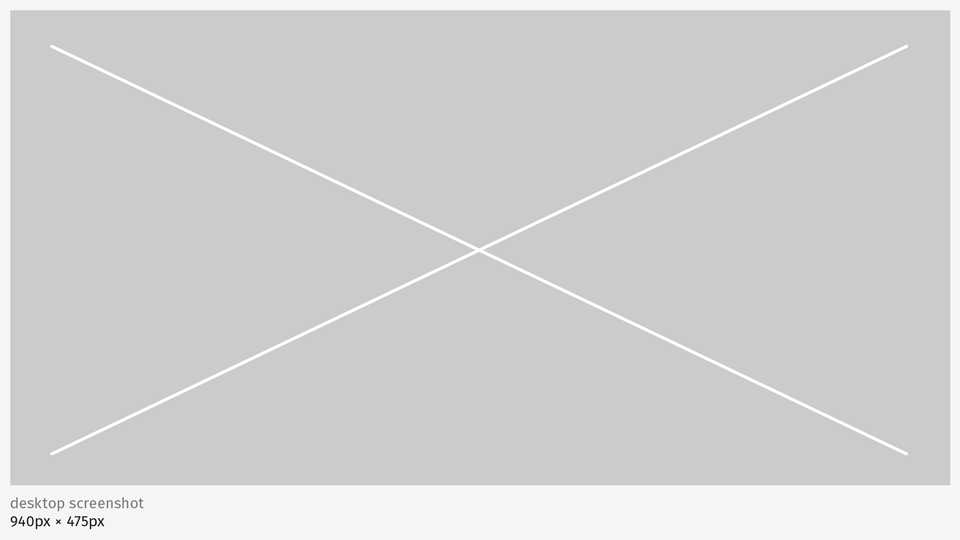

<div class="container">
	<div class="row">
		<div class="col-sm-12 col-md-12 col-lg-12">
			<h1>Images & Video</h1>
				<h2>Screen shots</h2>
				<p class="longText">
					There are set of default sizes for the app screen shots used in Marketplace for desktop, tablet, and mobile.
				</p>
				<br/>
		</div>
	</div>
	<!-- Pagination. If you have more than one page, set the multipage variable in the Frontmatter to true. Editing the pagination code happens in /_includes/homePagination.html.
		NOTE: This is currently broken in the Jekyll ver of this template.
		-->
		{% if page.multipage %}
			{% include homePagination.html %}
		{% endif %}
</div>
